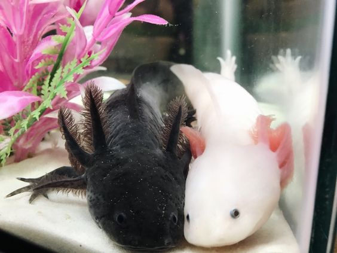

O que são axolotes?
O axolotle (do náuatle axolotl), também conhecido como axolote, é uma espécie de salamandra que não se desenvolve na fase de larva, permanecendo nesse estado mesmo como adultos. É um exemplo de animal neoténico, pois conserva durante toda a vida brânquias externas, uma característica do estado larval. Eles são muito usados em laboratório devido à sua capacidade de regeneração. Seu nome científico é Ambystoma mexicanum.